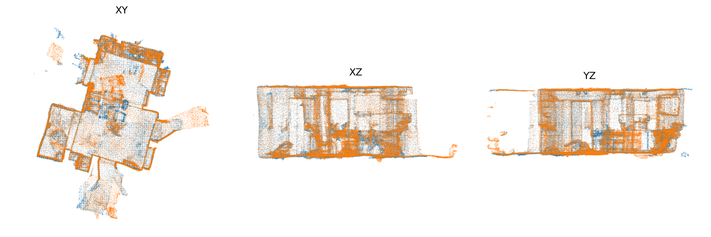
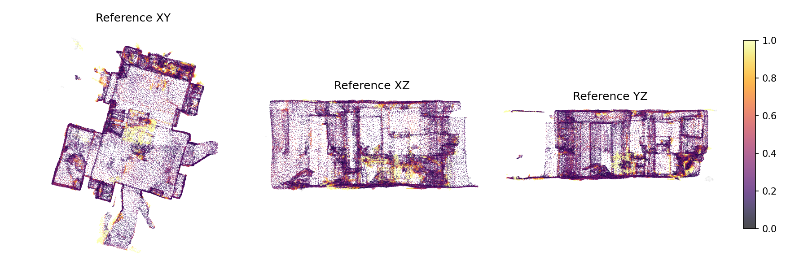
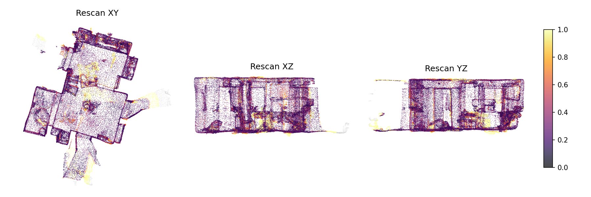

| split | validation |
|---|---|
| reference_scan_id | 38770ca1-86d7-27b8-8619-ab66f67d9adf |
| rescan_scan_id | 38770ca3-86d7-27b8-85a7-7d840ffdec6a |
| reliability | reliable |
| comparable_ratio_ref | 0.995 |
| comparable_ratio_rescan | 0.971 |
| overlap_ref | 0.837 |
| overlap_rescan | 0.785 |
| overlap_mean | 0.811 |
| overlap_gate_value | 0.785 |
| unchanged_ratio_ref_obs | 0.933 |
| unchanged_ratio_rescan_obs | 0.910 |
| voxel_size_m | 0.02 |
| tau_m | 0.1 |
| overlap_delta_m | 0.05 |
| nn_search_radius_m | 0.5 |
| overlap_min | 0.3 |
| translation_scale_applied | 1.0 |
| runtime_sec | 1.49 |



| objectId | label_ref | label_rescan | score | type | type_confidence | ref_support_total | ref_support_observed | ref_ratio_changed_obs | ref_p95_changed_dist | res_support_total | res_support_observed | res_ratio_changed_obs | res_p95_changed_dist | low_support |
|---|---|---|---|---|---|---|---|---|---|---|---|---|---|---|
| 90 | bottle | unknown | 1.0000 | disappeared | 0.90 | 95 | 71 | 1.0000 | 0.4900 | 0 | 0 | 0.0000 | 0.0000 | False |
| 88 | plant | unknown | 0.9675 | disappeared | 0.90 | 123 | 123 | 0.9675 | 0.3194 | 0 | 0 | 0.0000 | 0.0000 | False |
| 3 | chair | chair | 0.9232 | moved_rigid | 0.70 | 1031 | 1031 | 0.6702 | 0.2776 | 1162 | 950 | 0.9232 | 0.4807 | False |
| 4 | chair | chair | 0.8577 | moved_rigid | 0.70 | 619 | 485 | 0.8577 | 0.4871 | 688 | 688 | 0.3895 | 0.2389 | False |
| 73 | light | unknown | 0.7419 | disappeared | 0.90 | 31 | 31 | 0.7419 | 0.1616 | 0 | 0 | 0.0000 | 0.0000 | True |
| 89 | object | unknown | 0.7067 | disappeared | 0.90 | 208 | 208 | 0.7067 | 0.3100 | 0 | 0 | 0.0000 | 0.0000 | False |
| 2 | table | table | 0.5709 | moved_rigid | 0.70 | 1436 | 1417 | 0.5709 | 0.4710 | 1955 | 1779 | 0.4469 | 0.4554 | False |
| 74 | light | unknown | 0.5152 | disappeared | 0.90 | 33 | 33 | 0.5152 | 0.1352 | 0 | 0 | 0.0000 | 0.0000 | True |
| 25 | object | object | 0.1160 | nonrigid_or_recon | 0.50 | 755 | 755 | 0.0000 | 0.0000 | 793 | 793 | 0.1160 | 0.1676 | False |
| 33 | window | window | 0.1068 | moved_rigid | 0.70 | 1215 | 1215 | 0.0354 | 0.1878 | 1676 | 1676 | 0.1068 | 0.3538 | False |
| 64 | doorframe | doorframe | 0.1060 | nonrigid_or_recon | 0.50 | 795 | 795 | 0.0000 | 0.0000 | 1349 | 1349 | 0.1060 | 0.1749 | False |
| 83 | item | item | 0.1017 | nonrigid_or_recon | 0.50 | 125 | 125 | 0.0000 | 0.0000 | 59 | 59 | 0.1017 | 0.1273 | False |
| 72 | light | light | 0.0968 | disappeared | 0.90 | 31 | 31 | 0.0968 | 0.1192 | 1 | 1 | 0.0000 | 0.0000 | True |
| 36 | sink | sink | 0.0880 | nonrigid_or_recon | 0.50 | 2124 | 2124 | 0.0880 | 0.2300 | 1591 | 1591 | 0.0132 | 0.1353 | False |
| 15 | kitchen cabinet | kitchen cabinet | 0.0837 | nonrigid_or_recon | 0.50 | 2318 | 2318 | 0.0837 | 0.2126 | 1949 | 1949 | 0.0262 | 0.2105 | False |